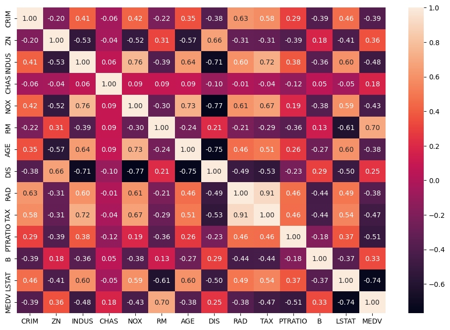
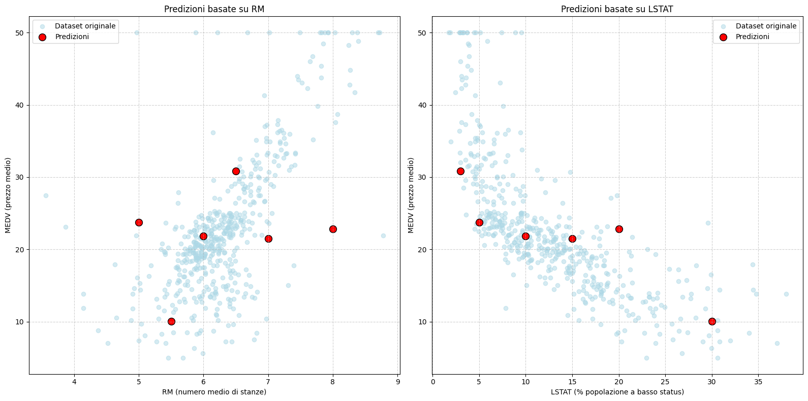
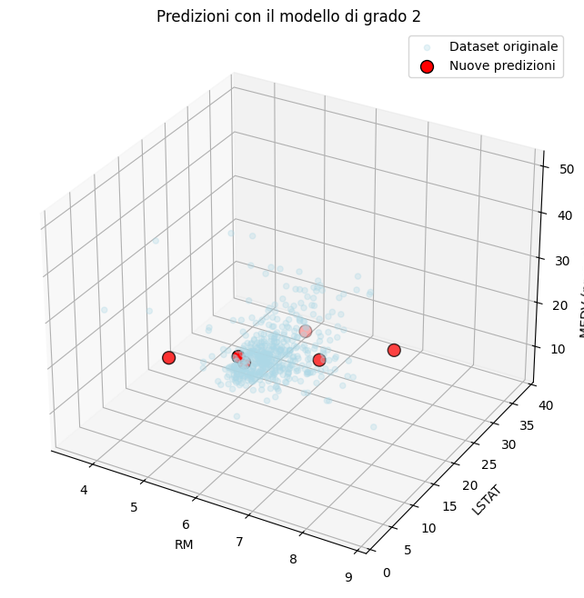
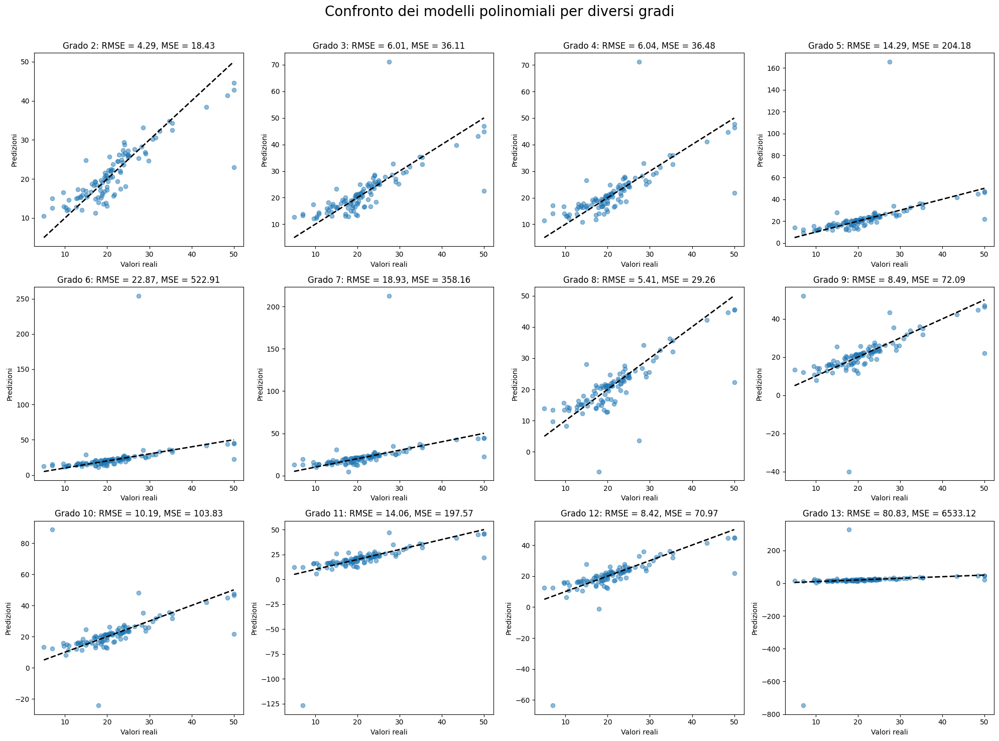

Bostonshouse
Progetto di Data Science

Il Progetto
Questo progetto è focalizzato sull'analisi esplorativa dei dati e sullo sviluppo di modelli di regressione per la predizione del valore delle abitazioni di Boston, utilizzando il classico Boston Housing Dataset.
Il progetto include anche uno studio approfondito sul comportamento dei modelli polinomiali in contesti di interpolazione ed estrapolazione tramite cross-validazione.
Tecnologie Utilizzate
- Python
- Jupyter Notebook
- pandas
- numpy
- matplotlib
- seaborn
- scikit-learn
Caratteristiche Principali
- Analisi Esplorativa dei Dati (EDA) con mappe di correlazione
- Modelli di regressione lineare e non lineare (polinomiale)
- Studio di overfitting e cross-validazione sui gradi del modello
- Visualizzazione grafica 2D e 3D delle stime di prezzo
- Predizione accurata dei valori basata su scikit-learn
Screenshot



